<header class="main-toolbar">
    
    <!-- Logo - TODO: Replace with new logo -->
    

    <!-- Profile -->
    <div class="profile">
        <span class="fa-stack fa-lg" style="font-size: 1em">
            <i class="fa fa-circle fa-stack-2x fa-inverse"></i>
            <i class="fa fa-user fa-stack-1x"></i>
        </span>
        <span class="bumpr">{{user}}</span>
        <i class="fa fa-caret-down bumpr"></i>
    </div>

</header>

<!-- Main View Area -->
<section class="main">

    <!-- Primary Navigation -->
    <nav class="primary-nav">

        <h1>ADMIN</h1>
        <ul class="nav-list">
            <li><a routerLink="/"><i class="fa fa-sitemap"></i><span>Organizations</span></a></li>
            <li><a routerLink="/"><i class="fa fa-support"></i><span>Super Users</span></a></li>
        </ul>

        <h1>MAIN</h1>
        <ul class="nav-list">
            <li><a routerLink="/"><i class="fa fa-bar-chart-o"></i><span>Dashboard</span></a></li>
            <li><a routerLink="/sites" routerLinkActive="active"><i class="fa fa-building-o"></i><span>Sites</span></a></li>
            <li><a routerLink="/lights" routerLinkActive="active"><i class="fa fa-lightbulb-o"></i><span>Lights</span></a></li>
            <li><a routerLink="/users" routerLinkActive="active"><i class="fa fa-group"></i><span>Users</span></a></li>
        </ul>

        <h1>OTHER</h1>
        <ul class="nav-list">
            <li><a routerLink="/"><i class="fa fa-cog"></i><span>Settings</span></a></li>
            <li><a routerLink="/"><i class="fa fa-bullhorn"></i><span>Feedback</span></a></li>
        </ul>
    </nav>

    <!-- Primary Router View -->
    <router-outlet></router-outlet>

</section>

<!-- NGRX/Store Dev Tools -->
<ngrx-store-log-monitor toggleCommand="ctrl-h" positionCommand="ctrl-m"></ngrx-store-log-monitor>


